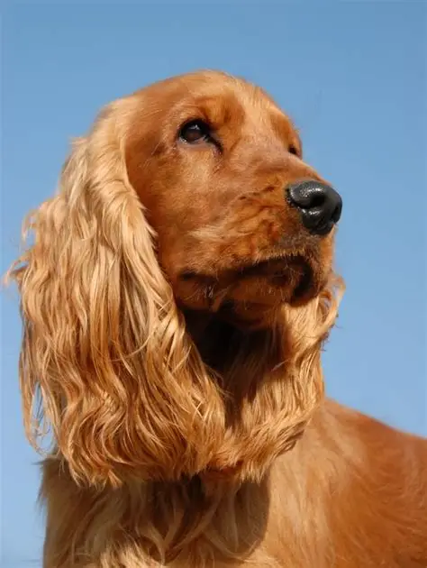
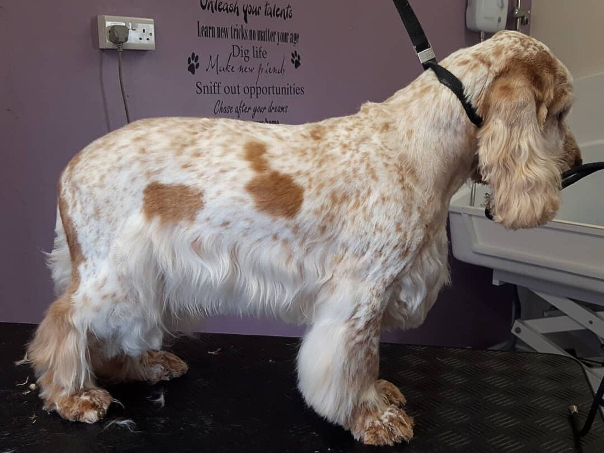
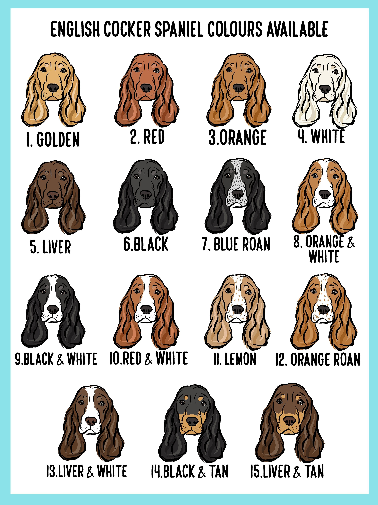
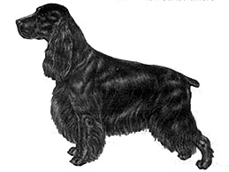

Breed Info -- English Cocker Spaniel
The English Cocker Spaniel is affectionate, intelligent, eager to please, and known for its beautiful silky coat.


Temperament
Merry, energetic, and affectionate. Sociable and eager to please, but needs daily exercise and mental stimulation.

Grooming
Silky feathered coat needs daily brushing, weekly ear cleaning, and professional grooming every 6–8 weeks. Watch for matting behind ears and under the collar.

Colours
Solid black, liver, red, or golden; parti-colours; and roans including blue, orange, lemon, and liver roan.

ANKC Breed Standards
Official DogsWest and ANKC standards for the breed.